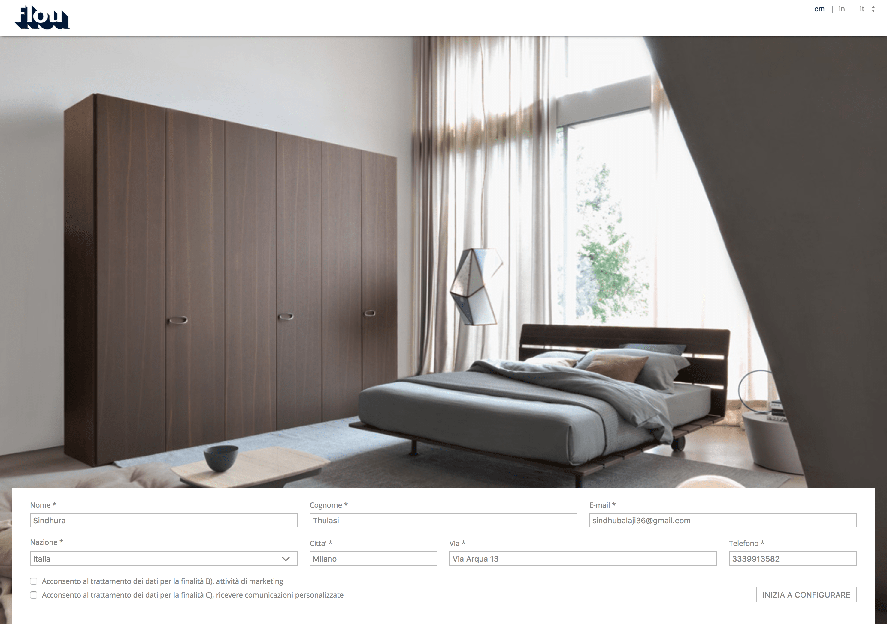
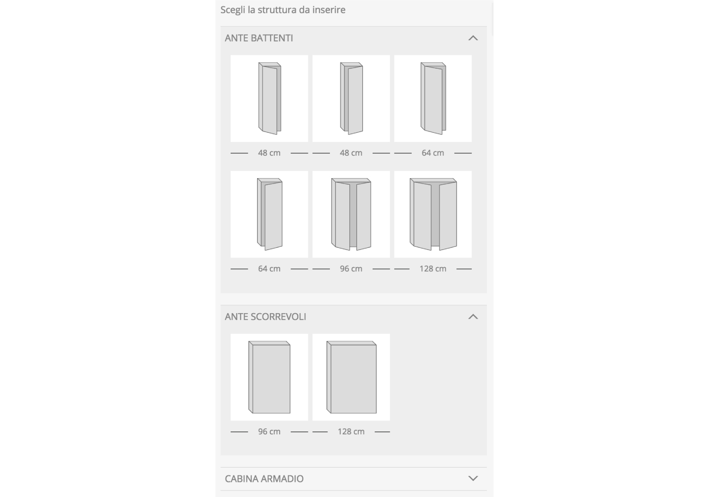
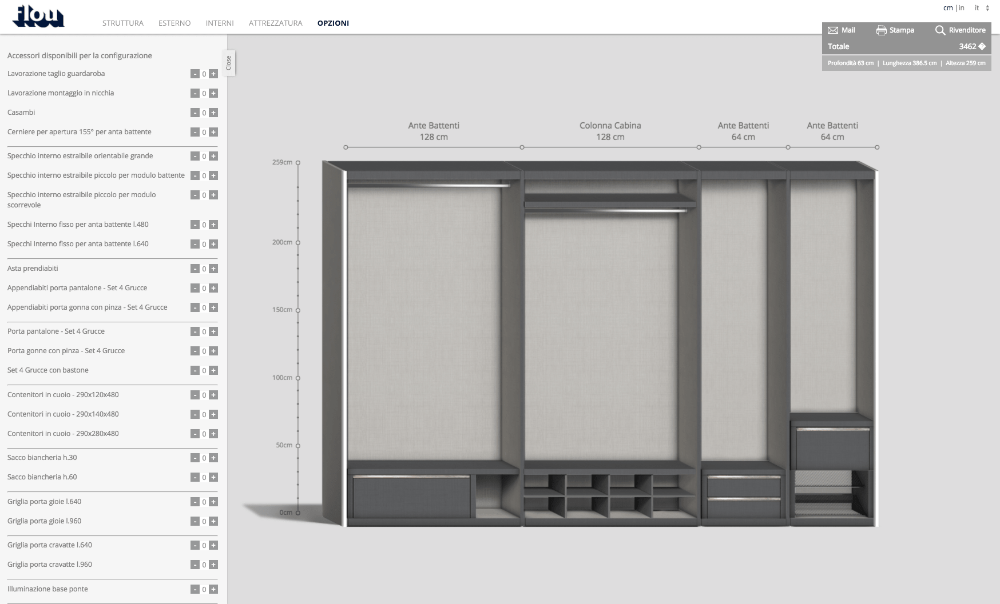

FLOU - CONFIGURATOR
BRIEF
To redesign the wardorbe configurator of Flou.
SOLUTION
In our re-design, we wanted to give the users a clean and clear configurating experience. We also wanted it to speak the same language as the website of Flou.
CLIENT / COMPANY / ROLE
Flou / Noone / Design
LINK - http://www.flou.it/wardrobeconfigurator/
TYPE - Re-design, Configurator
#Look and feel of the old configurator
Configurator Redesign
In the redesign, we wanted to focus on the user experience and and also give the users a clean and clear configurating experience and also speak the same language as the Flou website.

The main menu includes five steps for the configuration. The first step lets the user to define the structure and in the next step they can choose the outside texture of wardrobe and then the inside texture. After defining these elements, they can choose the inner equipments and other additional options that can be added to their wardrobe.
Side Menu
There is a side menu placed in the left corner with different elements to define the structure and choose different textures for the wardrobe. It also has an option to "Open" and "Close" so that it gives the user a more clean view of the configuration.
Structure
While the user defines the structure, he has the flexiblity to swap between the different structural elements and also delete the one's he has previously chosen. This gives the freedom to the user to be able to try different options in lesser time and in an easier way.
A short glimpse of defining the Structure
Outside Texture
Inside Texture
Inner Equipments

A glimpse into how the inner equipment section works
Options
To get in touch
Feel free to reach out to me at